Всё, что пара может поменять после знакомства: имена, расписание и напоминания, темы, почту и способы входа. Здесь же документы, письмо в поддержку, выход и удаление аккаунта.
14 экрановВкладка Settings или значок человека на главном
Меню
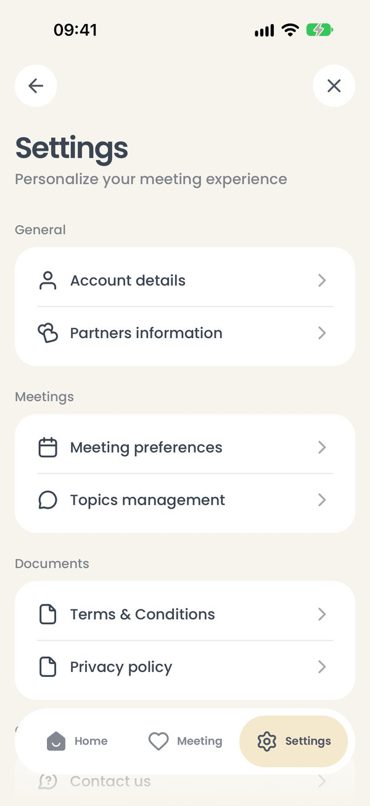
settings
01
Настройки
Что на экране
Settings — Personalize your meeting experience. Восемь пунктов в четырёх группах:
Стрелка назад или крестик — вернуться туда, откуда открыли настройки.
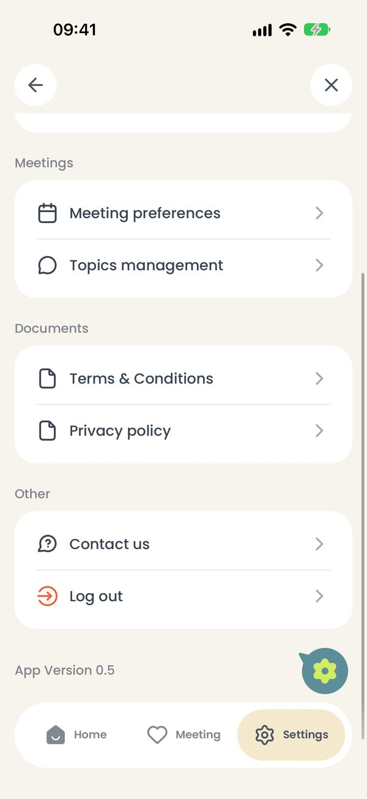
settings_scrolled
02
Низ меню
Что на экране
Внизу — Contact us, Log out и номер версии App Version 0.5. Список уходит под верхнюю и нижнюю панели.
Что можно сделать
Log out — выйти из аккаунта, приложение вернётся на экран входа.
Как это работает. Выход не стирает историю: она остаётся на телефоне. Войдёте тем же адресом — всё на месте. Войдёте другим — телефон очистится и загрузит историю того аккаунта.
Новое в 0.5. Перед выходом приложение успевает отправить в облако всё, что туда ещё не ушло, — чтобы ничего не потерялось, если потом на этом телефоне войдёт кто-то другой.
Пара и темы
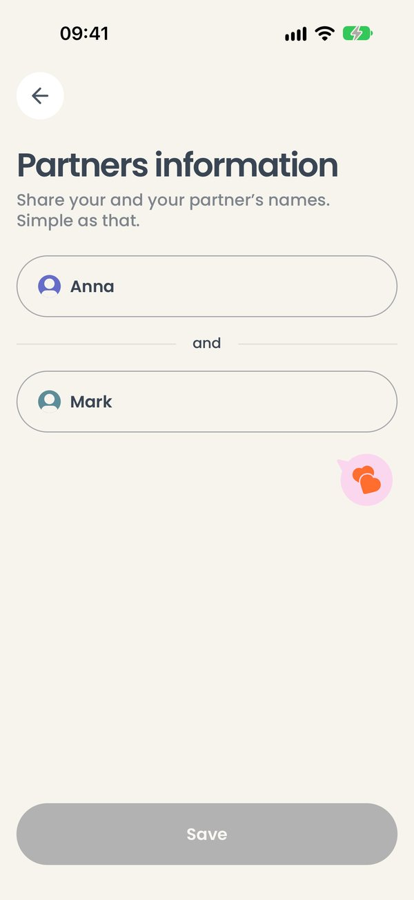
partners_edit
03
Имена пары
Что на экране
Partners information — те же два поля, что при знакомстве. Кнопка Save серая, пока ничего не изменено.
Что можно сделать
Поменять имя и нажать Save — внизу появится Name successfully changed, кнопка снова посереет.
Стрелка назад — уйти без сохранения.
Как это работает. Новые имена видны и в прошлых встречах: имена не «вшиты» в записи архива.
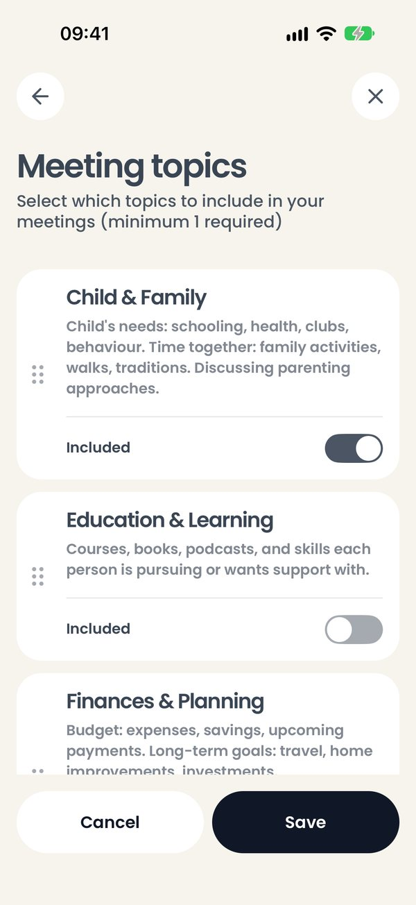
meeting_topics
04
Управление темами
Что на экране
Meeting topics — все четырнадцать тем с описаниями. У каждой переключатель Included: включена ли тема во встречи. Слева у каждой карточки — ручка из точек.
Что можно сделать
Переключатель — включить или выключить тему.
Потянуть за ручку — поменять порядок тем.
Save — сохранить. Если выключить все темы, кнопка посереет: нужна хотя бы одна.
Cancel — выйти, ничего не меняя.
Как это работает. Это тот же экран, что открывается кнопкой Edit topics and order перед встречей. Пока есть незаконченная встреча, он не открывается и говорит Finish your meeting first.
Встречи и напоминания
То, что приложение делает само: напоминает поговорить и отправляет итог письмом.
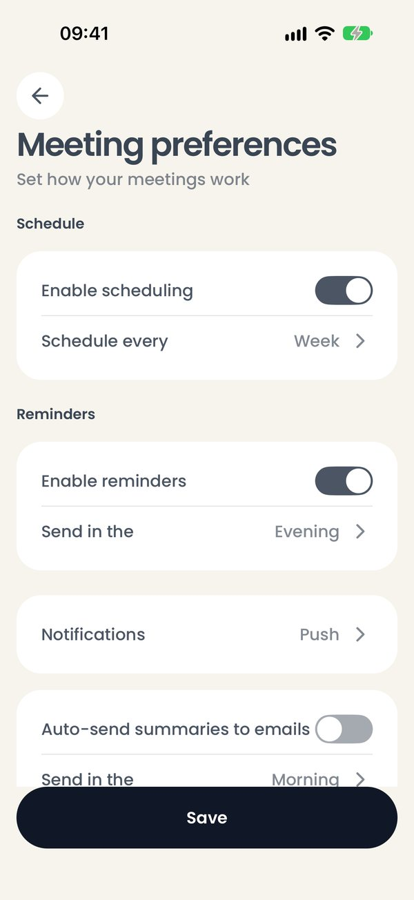
meeting_preferences
05
Настройки встреч
Что на экране
Meeting preferences — три группы:
Schedule — включить расписание и выбрать, как часто встречаться: день, неделя, две недели, месяц. Reminders — включить напоминания и выбрать время: утро (9:00), полдень (13:00) или вечер (20:00). Notifications — как напоминать: Push, Email или и то и другое.
Что можно сделать
Переключатели — включить или выключить.
Строка со стрелкой — открыть шторку с вариантами.
Save внизу — сохранить. Настройки применяются по этой кнопке, а не по каждому переключению.
На iPhone. Напоминания ставит сам iPhone заранее, на несколько встреч вперёд, — сервер для этого не нужен. Они приходят, даже если приложение закрыто.
Обратите внимание. Если уведомления для приложения выключены в настройках iPhone, под напоминаниями появится строка Notifications are turned off for this app in your phone settings, so reminders will not show up. и кнопка Open phone settings.
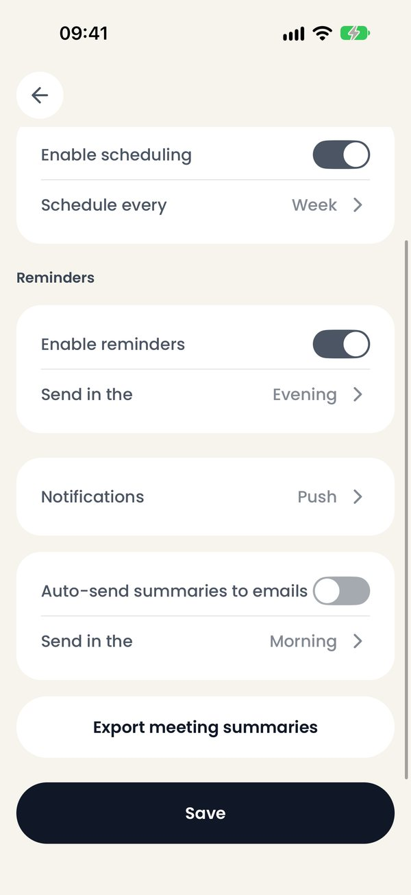
meeting_preferences_scrolled
06
Автоотправка и выгрузка
Что на экране
Низ того же экрана. Auto-send summaries to emails — итог встречи уходит письмом сам, без кнопки в конце встречи; Send in the — в какое время.
Export meeting summaries — вся история простым текстом.
Что можно сделать
Export meeting summaries — откроется системное меню «Поделиться»: сохранить в Заметки, отправить в мессенджер или письмом. Если встреч ещё нет, приложение скажет Nothing to export yet.
На iPhone. iPhone сам решает, когда разбудить приложение в фоне, поэтому автоотправка уходит при первом пробуждении после выбранного часа — или при первом открытии приложения после него, смотря что случится раньше. Без интернета письмо дождётся сети.
Аккаунт
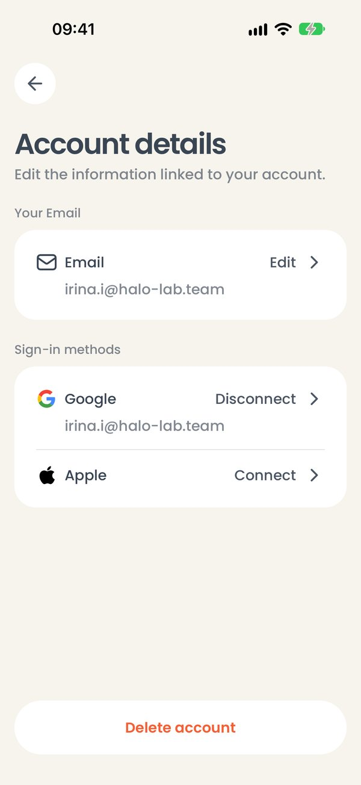
account
07
Данные аккаунта
Что на экране
Account details: Your Email — адрес аккаунта и кнопка Edit. Sign-in methods — способы входа: Google (подключён, кнопка Disconnect) и Apple (кнопка Connect). Внизу красная строка Delete account.
Что можно сделать
Edit — сменить почту.
Disconnect у Google — отключить вход через Google.
Connect у Apple — подключить Apple ID (в тестовой сборке не работает).
Delete account — удалить аккаунт.
Как это работает. Подключить можно только Google-аккаунт с тем же адресом: чужой увёл бы пару в другую учётную запись.
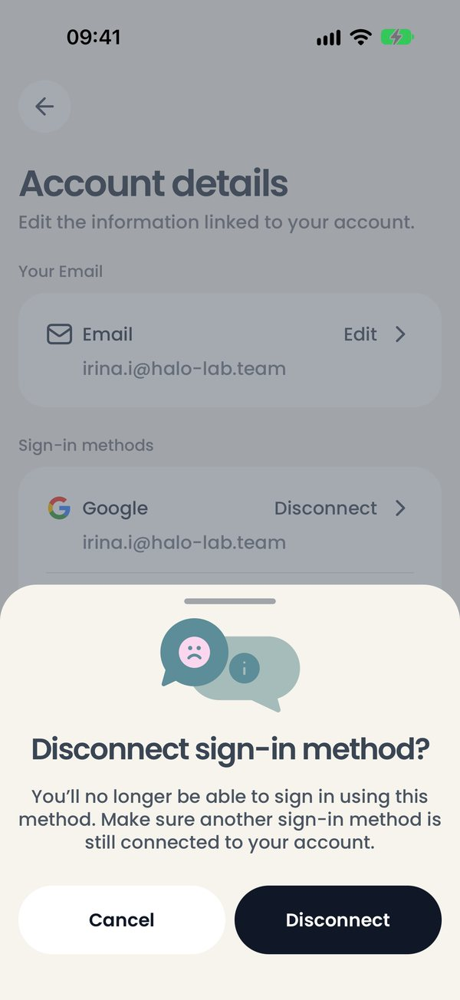
disconnect
08
Отключить способ входа
Что на экране
Disconnect sign-in method? — «вы больше не сможете входить этим способом; убедитесь, что к аккаунту подключён другой».
Что можно сделать
Cancel — оставить как есть.
Disconnect — отключить.
Как это работает. Последний способ входа отключить нельзя — войти по коду из письма можно всегда.
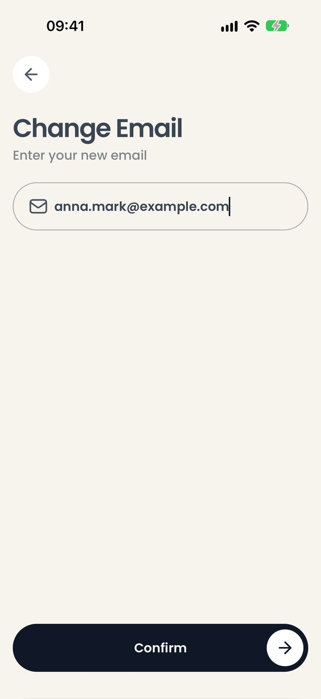
change_email
09
Смена почты
Что на экране
Change Email — поле для нового адреса и кнопка Confirm. Пока поле пустое, кнопка серая.
Что можно сделать
Ввести новый адрес и нажать Confirm — на него придёт код, как при входе. После кода адрес сменится, и приложение скажет Email saved successfully.
Стрелка назад — уйти; недописанный адрес забудется.
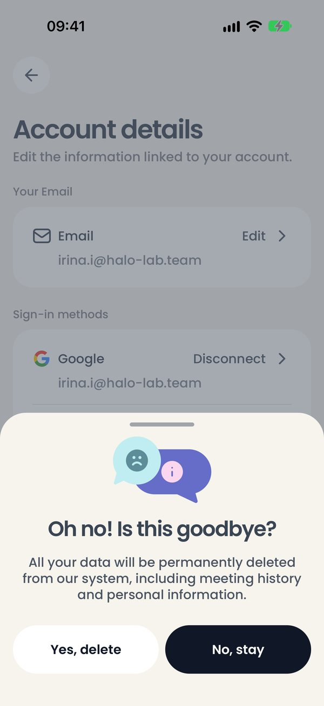
delete_account
10
Удаление аккаунта
Что на экране
Oh no! Is this goodbye? — «все данные будут удалены навсегда, включая историю встреч и личную информацию».
Что можно сделать
No, stay — передумать.
Yes, delete — на почту придёт код; после его ввода аккаунт удаляется, и приложение возвращается на экран входа.
Обратите внимание. Удаление необратимо: вместе с аккаунтом с сервера удаляется и облачная копия всех встреч. Вход тем же адресом после этого создаст новый, пустой аккаунт.
Документы и поддержка
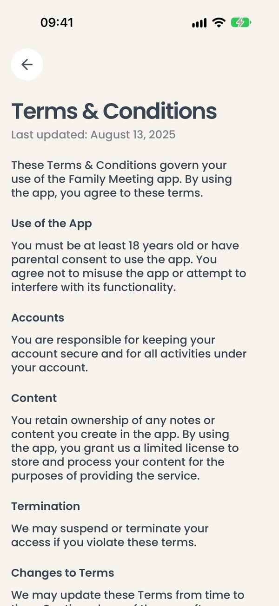
terms
11
Условия использования
Что на экране
Terms & Conditions — полный текст условий с датой последнего обновления. Сюда же ведёт Learn more из шторки согласия.
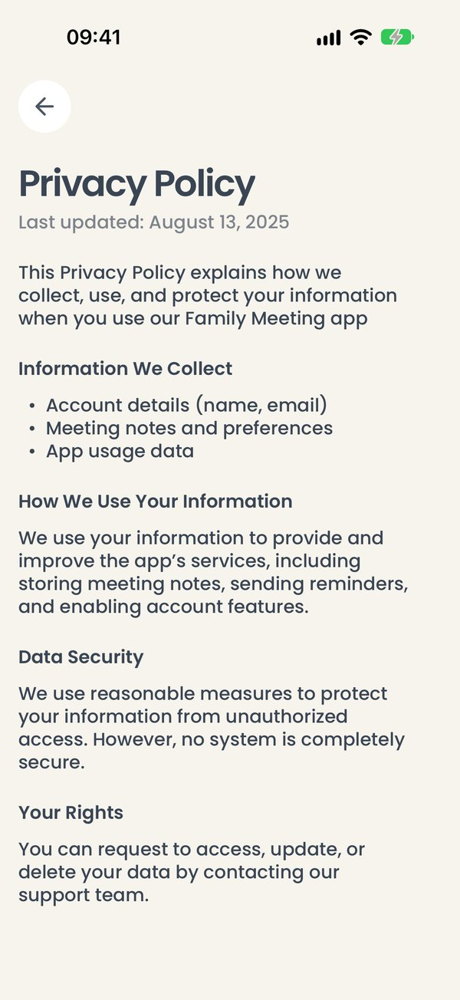
privacy
12
Политика конфиденциальности
Что на экране
Privacy Policy — что приложение собирает, как использует и защищает данные и какие права у пользователя.
Как это работает. Оба текста взяты из макета дизайнера слово в слово.
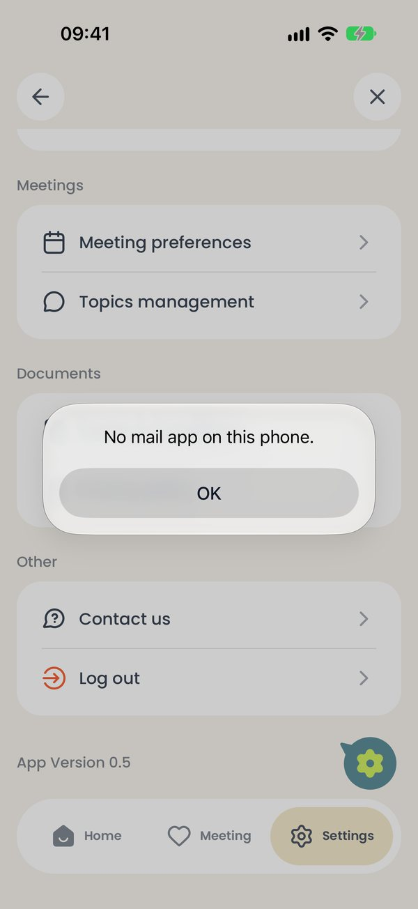
contact_us
13
Написать в поддержку
Что на экране
Contact us открывает приложение «Почта» с новым письмом, где уже вписан адрес поддержки.
На снимке — симулятор, в нём «Почты» нет, поэтому приложение говорит No mail app on this phone.
Что можно сделать
OK — закрыть сообщение.
На iPhone. На настоящем iPhone с настроенной почтой откроется новое письмо. Своего чата поддержки в приложении нет.